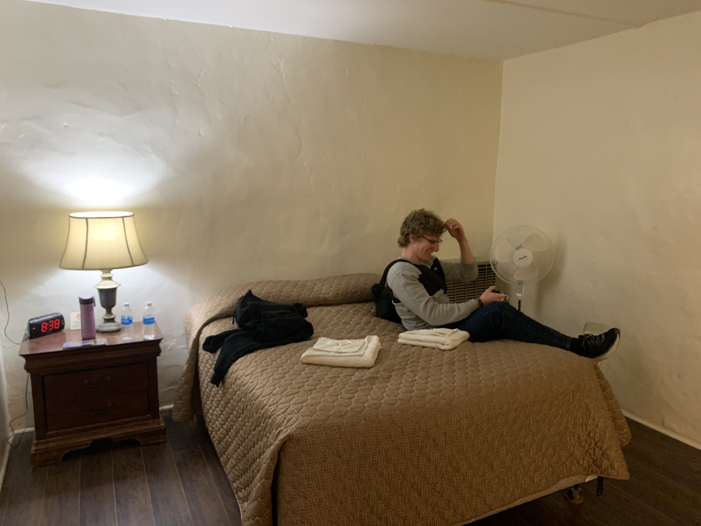

Hello, thank you for reading this little blog. I had so many photos from our trip to California, I thought the best way to share was through a web post. While an instagram / facebook post might have been quicker, the code for this web page was generated instantly using ChatGPT. Technology is amazing!
Please enjoy:
We left washington DC on Wednesday night and stayed in LAX at the Holiday Inn. After working the next day we decided to officially start our trip with a visit to In-N-Out burger. Erin's first time! She said she understood why people liked the burger, but the fries were just ok. I agree!
Next we drove out to Santa Monica pier. Erin really wanted to see the Pacific Ocean and I really wanted to check out the pier and it's beaches. What a view :).
My favorite part of the pier was underneath it, the water was just so calming.
Had to take a photo!
Next we walked to the outdoor gym at Santa Monica beach. The facilities were in great shape and were a ton of fun.
Still got it :D
Climbing the rope. You can hear me touch the top (had to get the sunset).
The sunset looked nice, but so did Erin!
After a night of rest in Indio it was time to hit the road. First we bought lots of food, water, and gas, and high-tailed it to Joshua Tree National Park.
Don't touch the dangerous cholla cactus (pronounced Choy-Ya)
Get off my hat! 😂
Next we drove to skull rock and explored some caves. So spooky...
Couldn't leave without a photo with a joshua tree. Up next is a two and a half hour drive up into the cold mojave.
Woah, Where did that snow come from...The views from Mojave National Preserve were stellar. Thankfully we made it just before sunset. I thought California was supposed to be warm!
Many of the joshua trees in mojave had passed away. We thought it may have been due to fire. What are your thoughts?

Another hour drive to our destination at Delight's Hot Springs in the middle of absolutely nowhere. This hotel was a trip. Not only was everything in the room a little...run down, but it didn't even have a shower! While the hot springs were a lovely experience, this was not luxury accomodation!
Up next was Death Valley :). After exiting our "resort" we drove immediatly into the valley to catch some views. Check out the sights from Zabriski Point.
That's deep!
What visit to Death Valley would be complete without Bad Water? Bad Water is a geological wonder named for the abundance of undrinkable salt water collected there. The draining water forms a beautiful salt flat that makes for a must-see attraction.
It was so windy on the salt flats that we tried jumping up and down to see how far the wind would push us back.
Views like this cannot be beat. Nature is truly a wonder...
Death Valley has some killer trails.
Check out the wind near the Artist's View Drive. I've never seen wind in the park like this before. I could barely keep my glasses on!
After a night of rest it was time to hit the Mesquite Sand Dunes. This is by far my favorite part of the park. Check out this beautiful Green Mesquite Tree. I've never seen one in bloom before. What pretty yellow blossoms :).
If sand dunes are good for anything, it's having fun 😂. At 24, rolling down these hills is starting to hurt a little...😂
So cool!
While the dunes were great, as we approached the tallest dune a massive wind storm hit. The sand blasted any uncovered skin and forced us to leave early. I quickly ran to the top dune and dashed back to Erin without stopping. Even though we trudged our way to the car, I couldn't ask for a cooler experience.
After a night of relaxation in Stovepipe Wells, we said goodbye to death valley and hit the road to vegas.
Thankfully I managed to keep Erin alive! 😅
Up next was Las Vegas. Dad managed to get us an inexpensive room at the Paris Casino which is my absolute favorite on the strip. Thanks to a great credit card we were able to become Cesear's Diamond Members and live like high rollers.
One morning I decided to bet $1 at the slots and managed to hit for $7 on the last spin. I cashed out immediatly!
Vegas has a lot of food that's unhealthy for you. Our first night, we met up with Erin's friend Meridith and had a nice dinner at Ellis Island Casino. The $25 Prime rib and $10 Player's Club Steak Special were amazing.
After a night of rest (no drinks, if you can believe it), we toured a bunch of casinos on the strip and hit the pinball hall of fame. We won't discuss who's the better pinball player ;)
Finally to end the trip, we ate a lovely buffet at Cesear's Bacchanal with Erin's friend Meridith and walked over to the High Roller ferris wheel for some views of the strip at night.
After all this time, I was truly a high roller 😅.
At the end of the day I had a fantastic experience. I could not ask for a better travel partner and companion in Erin. She is a real trooper and never complained a single time, which says all it needs to.
I can't describe the joy I feel from having these experiences with her and relish the opportunity to take her on wacky / semi-dangerous trips in the future. She is truly one of a kind :)